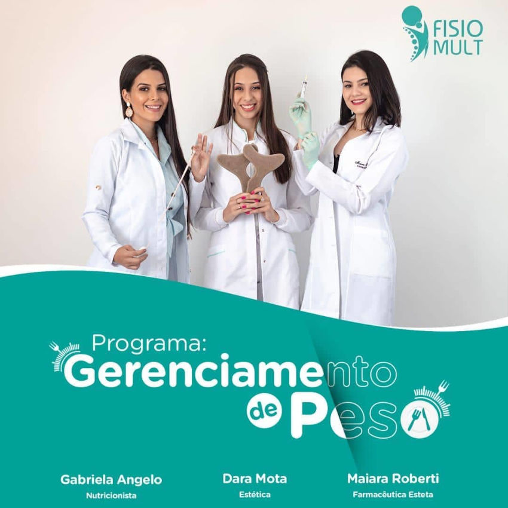

Nossa Equipe e Suas Epecialidades

Dr Gabriela Fabri
Devolvendo Sorrisos!
Cirurgiã Dentista
Atendimento Adulto e Infantil
Clinica Geral e Ortodontia
Gabriela Angelo
Nutricionista
Simplificando a nutrição.
Dr Joice Fernandes
Psicologia Familiar e Infantil
Ajudo VOCÊ a viver bem com sua FAMÍLIA.
Construa e Reconstrua seus LAÇOS AFETIVOS.
Supere seus desafios e mude o curso da sua VIDA.

Dr Sonia Almeida
Fonodiologia
Especialista em motricidade orofacial
Dr Loan Amaral
Psicologia
Programa Gerenciamento do Peso
Quem Somos?
A FisioMult é uma clínica multidisciplinar referência em Douradina
e Região, com profissionais qualificados, equipamentos modernos e
ampla estrutura física. Idealizada para oferecer aos pacientes
serviços de saúde com atendimento diferenciado com qualidade e humanização.
Conheça nossas especialidades:
Fisioterapia
Pilates Clinico e Funcional
Psicologia Infantil e Familiar
Psicologia
Nutricioniata
Fonoldiologia
Tratamento Estetico Personalizado
Psiquiatria
Tratamento Dentario e Ortodondia
Programa Peso Certo
Pilates Clinico e Funcional
Psicologia Infantil e Familiar
Psicologia
Nutricioniata
Fonoldiologia
Tratamento Estetico Personalizado
Psiquiatria
Tratamento Dentario e Ortodondia
Programa Peso Certo
Galeria

Entrar em Contato
Endereço:
Avenida Barão do Rio Branco, 1128 - Jardim Rio Branco
Douradina - PR 87485-000 Brasil
Fone:
(44) 99179-7956Horario De Atendimento
Seg.: 08:00 – 11:30, 13:30 – 18:00
Ter.: 08:00 – 11:30, 13:30 – 18:00
Qua.: 08:00 – 11:30, 13:30 – 18:00
Qui.: 08:00 – 11:30, 13:30 – 18:00
Sex.: 08:00 – 11:30, 13:30 – 18:00
Sáb.: 08:00 – 12:00
Dom.: Fechado